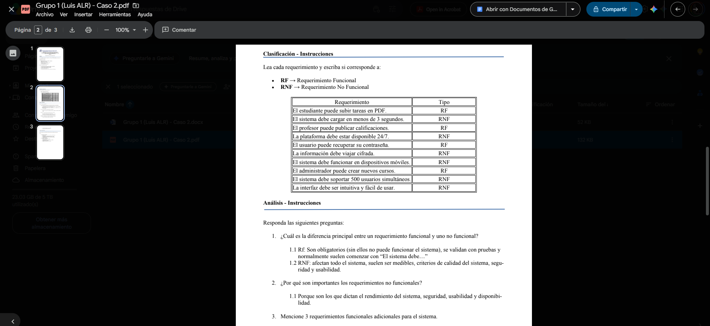

Semana 2
25 de mayo de 2026
Fecha y hora
Semana 2 / 25-05-2026 (5:00 pm a 8:30 pm – Virtual)
Actividades realizadas durante la clase:
- Explicación de la presentación por parte del profesor.
- Revisión y entrega del caso 1, que fue entregado en la semana 1.
- Caso 2, sobre la plataforma web llamada UTN Virtual Plus para administrar cursos y actividades académicas (Requerimientos funcionales y no funcionales).
Soluciones implementadas
Clasificación de los requerimientos del caso 2, en grupo con los compañeros.
Evidencias (capturas, código, diagramas)
Captura 1: Caso 2 que fue desarrollado en clases de forma grupal.

Reflexiones o mejoras futuras
Tener clara la diferencia entre requerimientos funcionales, no funcionales y lo que conlleva cada uno, ya que en algunos casos específicos se pueden confundir.
Notas generales
Hora de atención: Jueves de 6:00 a 7:00 pm.
Se empieza con la revisión del caso #1 de la clase pasada.
Gestión de Proyectos de Software:
- Definición y Objetivos: Es el proceso de planificar, organizar y controlar recursos para desarrollar software cumpliendo con plazos, presupuestos y requisitos de calidad. Su meta principal es asegurar la satisfacción del cliente y la entrega en tiempo y forma.
- Estimación basada en experiencia: Son las personas (el equipo de desarrollo) quienes, con base en su experiencia, determinan el tiempo necesario para desarrollar un módulo.
- Áreas de conocimiento (según el PMI): Abarca toda la documentación y gestión que se debe realizar antes y durante el desarrollo, incluyendo el alcance, tiempo, costos, calidad, riesgos y recursos humanos.
- Metodologías de Trabajo: Se eligen según la naturaleza del proyecto. Las más comunes incluyen Cascada (Waterfall), Ágiles (Scrum, Kanban) y enfoques Híbridos (combinación de ambas).
Desafíos Frecuentes:
- Cambios constantes en los requerimientos (es vital dejarlos bien estipulados desde el inicio para no perder la alineación con el cliente).
- Retrasos en la entrega.
- Problemas de comunicación dentro del equipo.
- Presupuesto insuficiente.
Requerimientos del Sistema:
Definición: Son las declaraciones que detallan qué debe hacer el sistema, sus propiedades, restricciones y expectativas para satisfacer al usuario y los objetivos del negocio.
- Requerimientos Funcionales (El "Qué"): Son obligatorios y describen las acciones específicas que el sistema debe ejecutar.
Ejemplos: Un sistema bancario debe permitir transferir dinero; un sistema de ventas debe generar facturas. - Requerimientos No Funcionales (El "Cómo"): Definen cómo debe comportarse el sistema desde una perspectiva técnica, afectando a todo el software en lugar de a una función aislada.
Ejemplos: La aplicación debe responder en menos de 2 segundos (rendimiento); el sistema debe estar disponible el 99.9% del tiempo (disponibilidad); la información debe estar cifrada (seguridad).